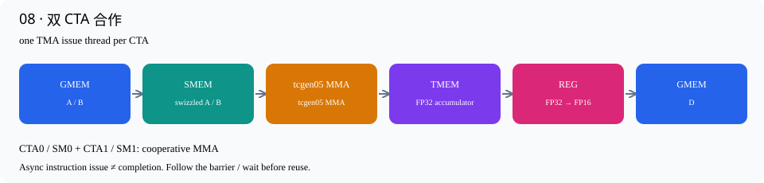

这份代码调用CUTLASS成熟的collective builder，用来检查“换成库内已优化流水线后是什么水平”。它明确作为额外基线，不冒充原书第9版的手写实现。它与九个版本使用相同输入和测试程序。
固定配置为FP16输入/输出、FP32累加、256×256×64 tile、2×1×1 cluster，主循环和epilogue schedule由CUTLASS选择。当前测得约100μs，仍未超过当轮约91μs的cuBLAS；这说明仅改用高层builder不能自动解决剩余差距。
./build.sh cutlass_reference
./build/cutlass_reference 4096 4096 4096
数据路径：GMEM → TMA pipeline → SMEM → tcgen05 → TMEM → CUTLASS epilogue → D。内部阶段和warp调度由所选collective提供；详细实现可沿builder生成类型进入NVIDIA头文件，而不是把全部库内部实现伪装成几十行手写kernel。

| 1 | // 独立诊断基线：CUTLASS 已优化的 collective builder；不是第9步的手写移植。 | 说明性注释，不生成机器指令。对应的中文机制解释见本节开头和下面的实际语句。 |
| 2 | #include "common.cuh" | 引入CUDA/CuTe、错误检查或C++标准库声明；这不是运行时加载Python包。 |
| 3 | #include <cutlass/epilogue/collective/collective_builder.hpp> | 引入CUDA/CuTe、错误检查或C++标准库声明；这不是运行时加载Python包。 |
| 4 | #include <cutlass/gemm/collective/collective_builder.hpp> | 引入CUDA/CuTe、错误检查或C++标准库声明；这不是运行时加载Python包。 |
| 5 | #include <cutlass/gemm/device/gemm_universal_adapter.h> | 引入CUDA/CuTe、错误检查或C++标准库声明；这不是运行时加载Python包。 |
| 6 | #include <cutlass/gemm/kernel/gemm_universal.hpp> | 引入CUDA/CuTe、错误检查或C++标准库声明；这不是运行时加载Python包。 |
| 7 | #include <cutlass/util/packed_stride.hpp> | 引入CUDA/CuTe、错误检查或C++标准库声明；这不是运行时加载Python包。 |
| 8 | using namespace cute; | 建立本项目命名空间，或简写CuTe名字；不改变数据布局或GPU调度。 |
| 9 | using RefTile = Shape<_256, _256, _64>; | 定义256×256×64 MMA tile及2×1×1 CTA cluster。 |
| 10 | using Cluster = Shape<_2, _1, _1>; | 定义256×256×64 MMA tile及2×1×1 CTA cluster。 |
| 11 | using Epilogue = typename cutlass::epilogue::collective::CollectiveBuilder< | 使用CUTLASS collective builder按以下模板参数构造MMA主循环或epilogue。内部已有专用流水线与同步实现，不等于逐行复刻原书。 |
| 12 | cutlass::arch::Sm100, cutlass::arch::OpClassTensorOp, RefTile, Cluster, | 选择Blackwell Tensor Core架构类。nvcc仍以sm_103a编译，支持本机B300。 |
| 13 | cutlass::epilogue::collective::EpilogueTileAuto, float, float, H, | 让CUTLASS选择合法的epilogue tile或流水线策略，不能保证自动得到当前shape的全局最优性能。 |
| 14 | cutlass::layout::RowMajor, 8, H, cutlass::layout::RowMajor, 8, | 描述FP16输入的row-major A、column-major B数学视图，以及row-major输出；alignment8表示16-byte对齐。 |
| 15 | cutlass::epilogue::collective::EpilogueScheduleAuto>::CollectiveOp; | 使用CUTLASS collective builder按以下模板参数构造MMA主循环或epilogue。内部已有专用流水线与同步实现，不等于逐行复刻原书。 |
| 16 | using Mainloop = typename cutlass::gemm::collective::CollectiveBuilder< | 使用CUTLASS collective builder按以下模板参数构造MMA主循环或epilogue。内部已有专用流水线与同步实现，不等于逐行复刻原书。 |
| 17 | cutlass::arch::Sm100, cutlass::arch::OpClassTensorOp, H, | 选择Blackwell Tensor Core架构类。nvcc仍以sm_103a编译，支持本机B300。 |
| 18 | cutlass::layout::RowMajor, 8, H, cutlass::layout::ColumnMajor, 8, float, | 描述FP16输入的row-major A、column-major B数学视图，以及row-major输出；alignment8表示16-byte对齐。 |
| 19 | RefTile, Cluster, | 本行继续上方表达式的参数/类型：描述FP16输入的row-major A、column-major B数学视图，以及row-major输出；alignment8表示16-byte对齐。 |
| 20 | cutlass::gemm::collective::StageCountAutoCarveout<sizeof( | 根据epilogue占用扣除SMEM后，自动计算可用的输入pipeline stage数。 |
| 21 | typename Epilogue::SharedStorage)>, | 本行继续上方表达式的参数/类型：根据epilogue占用扣除SMEM后，自动计算可用的输入pipeline stage数。 |
| 22 | cutlass::gemm::collective::KernelScheduleAuto>::CollectiveOp; | 使用CUTLASS collective builder按以下模板参数构造MMA主循环或epilogue。内部已有专用流水线与同步实现，不等于逐行复刻原书。 |
| 23 | using Kernel = cutlass::gemm::kernel::GemmUniversal<Shape<int, int, int, int>, | 组装GPU kernel，并用device adapter提供参数初始化、workspace查询和launch入口。 |
| 24 | Mainloop, Epilogue>; | 本行继续上方表达式的参数/类型：组装GPU kernel，并用device adapter提供参数初始化、workspace查询和launch入口。 |
| 25 | using Gemm = cutlass::gemm::device::GemmUniversalAdapter<Kernel>; | 组装GPU kernel，并用device adapter提供参数初始化、workspace查询和launch入口。 |
| 26 | void launch(Problem p) { | 封装矩阵形状、实际SM数和GPU指针；这是轻量host参数对象，不拥有矩阵内存。 |
| 27 | static Gemm gemm; | 复用adapter初始化结果，不在每次被计时的kernel调用中重建资源。 |
| 28 | static bool ready = false; | 复用adapter初始化结果，不在每次被计时的kernel调用中重建资源。 |
| 29 | static void *workspace = nullptr; | 复用adapter初始化结果，不在每次被计时的kernel调用中重建资源。 |
| 30 | if (!ready) { | 根据参数、API状态或数值条件选择处理路径；失败路径必须终止当前测试。 |
| 31 | auto sa = cutlass::make_cute_packed_stride(Kernel::StrideA{}, | 从矩阵形状计算CUTLASS所需的紧凑stride。B的张量逻辑次序按[N,K,L]描述，数学矩阵仍是[K,N]列主序。 |
| 32 | make_shape(p.m, p.k, 1)); | 本行继续上方表达式的参数/类型：从矩阵形状计算CUTLASS所需的紧凑stride。B的张量逻辑次序按[N,K,L]描述，数学矩阵仍是[K,N]列主序。 |
| 33 | auto sb = cutlass::make_cute_packed_stride(Kernel::StrideB{}, | 从矩阵形状计算CUTLASS所需的紧凑stride。B的张量逻辑次序按[N,K,L]描述，数学矩阵仍是[K,N]列主序。 |
| 34 | make_shape(p.n, p.k, 1)); | 本行继续上方表达式的参数/类型：从矩阵形状计算CUTLASS所需的紧凑stride。B的张量逻辑次序按[N,K,L]描述，数学矩阵仍是[K,N]列主序。 |
| 35 | auto sd = cutlass::make_cute_packed_stride(Kernel::StrideD{}, | 从矩阵形状计算CUTLASS所需的紧凑stride。B的张量逻辑次序按[N,K,L]描述，数学矩阵仍是[K,N]列主序。 |
| 36 | make_shape(p.m, p.n, 1)); | 本行继续上方表达式的参数/类型：从矩阵形状计算CUTLASS所需的紧凑stride。B的张量逻辑次序按[N,K,L]描述，数学矩阵仍是[K,N]列主序。 |
| 37 | cutlass::KernelHardwareInfo hw; | 给CUTLASS调度器提供设备编号和真实SM数。 |
| 38 | hw.device_id = 0; | 给CUTLASS调度器提供设备编号和真实SM数。 |
| 39 | hw.sm_count = p.sms; | 给CUTLASS调度器提供设备编号和真实SM数。 |
| 40 | Gemm::Arguments args{cutlass::gemm::GemmUniversalMode::kGemm, | 组装GPU kernel，并用device adapter提供参数初始化、workspace查询和launch入口。 |
| 41 | {p.m, p.n, p.k, 1}, | 本行继续上方表达式的参数/类型：组装GPU kernel，并用device adapter提供参数初始化、workspace查询和launch入口。 |
| 42 | {p.a, sa, p.b, sb}, | 本行继续上方表达式的参数/类型：本行继续上方表达式的参数/类型：组装GPU kernel，并用device adapter提供参数初始化、workspace查询和launch入口。 |
| 43 | {{}, p.d, sd, p.d, sd}, | 本行继续上方表达式的参数/类型：本行继续上方表达式的参数/类型：本行继续上方表达式的参数/类型：组装GPU kernel，并用device adapter提供参数初始化、workspace查询和launch入口。 |
| 44 | hw}; | 本行继续上方表达式的参数/类型：本行继续上方表达式的参数/类型：本行继续上方表达式的参数/类型：本行继续上方表达式的参数/类型：组装GPU kernel，并用device adapter提供参数初始化、workspace查询和launch入口。 |
| 45 | args.epilogue.thread.alpha = 1; | alpha1/beta0，保持D=A×Bᵀ，不读取旧C作为有效输入。 |
| 46 | args.epilogue.thread.beta = 0; | alpha1/beta0，保持D=A×Bᵀ，不读取旧C作为有效输入。 |
| 47 | args.scheduler.max_swizzle_size = 8; | 设置调度swizzle上限8，以改善L2任务局部性。 |
| 48 | auto status = gemm.can_implement(args); | 检查参数是否满足kernel限制；失败时停止，不把没有执行当作性能结果。 |
| 49 | if (status != cutlass::Status::kSuccess) { | 根据参数、API状态或数值条件选择处理路径；失败路径必须终止当前测试。 |
| 50 | fprintf(stderr, "can_implement %d\n", int(status)); | 检查参数是否满足kernel限制；失败时停止，不把没有执行当作性能结果。 |
| 51 | exit(8); | 在CUDA错误、非法shape或数值不一致时输出诊断并以非零状态退出，脚本立即停止。 |
| 52 | } | 结束当前代码块或类型声明；作用域对应上方最近的函数、循环或条件分支。 |
| 53 | CUDA_OK(cudaMalloc(&workspace, | 分配GPU内存；字节数按FP16=2B、FP32=4B计算。分配在计时与Graph捕获之外。 |
| 54 | std::max(size_t(1), Gemm::get_workspace_size(args)))); | 查询CUTLASS需要的workspace并分配，位于计时区域之外。 |
| 55 | status = gemm.initialize(args, workspace, cudaStreamPerThread); | 建立kernel参数与workspace，仅在首次调用做。当前命令行程序每进程只处理一组固定指针/shape。 |
| 56 | if (status != cutlass::Status::kSuccess) { | 根据参数、API状态或数值条件选择处理路径；失败路径必须终止当前测试。 |
| 57 | fprintf(stderr, "initialize %d\n", int(status)); | 在CUDA错误、非法shape或数值不一致时输出诊断并以非零状态退出，脚本立即停止。 |
| 58 | exit(8); | 在CUDA错误、非法shape或数值不一致时输出诊断并以非零状态退出，脚本立即停止。 |
| 59 | } | 结束当前代码块或类型声明；作用域对应上方最近的函数、循环或条件分支。 |
| 60 | ready = true; | 复用adapter初始化结果，不在每次被计时的kernel调用中重建资源。 |
| 61 | } | 结束当前代码块或类型声明；作用域对应上方最近的函数、循环或条件分支。 |
| 62 | auto status = gemm.run(cudaStreamPerThread); | 在相同per-thread stream上启动CUTLASS kernel，便于用同一Graph基准比较。 |
| 63 | if (status != cutlass::Status::kSuccess) { | 根据参数、API状态或数值条件选择处理路径；失败路径必须终止当前测试。 |
| 64 | fprintf(stderr, "run %d\n", int(status)); | 在CUDA错误、非法shape或数值不一致时输出诊断并以非零状态退出，脚本立即停止。 |
| 65 | exit(8); | 在CUDA错误、非法shape或数值不一致时输出诊断并以非零状态退出，脚本立即停止。 |
| 66 | } | 结束当前代码块或类型声明；作用域对应上方最近的函数、循环或条件分支。 |
| 67 | } | 结束当前代码块或类型声明；作用域对应上方最近的函数、循环或条件分支。 |
| 68 | constexpr int VERSION = 10; | 测试程序用这个编译期版本号检查允许的输入形状，并标记输出JSON。 |
| 69 | #include "runner_graph.cuh" | 引入共享C++测试入口：随机输入、CPU/完整cuBLAS参考、cuBLASLt选择与Graph计时。对应独立测试文档有逐行说明。 |